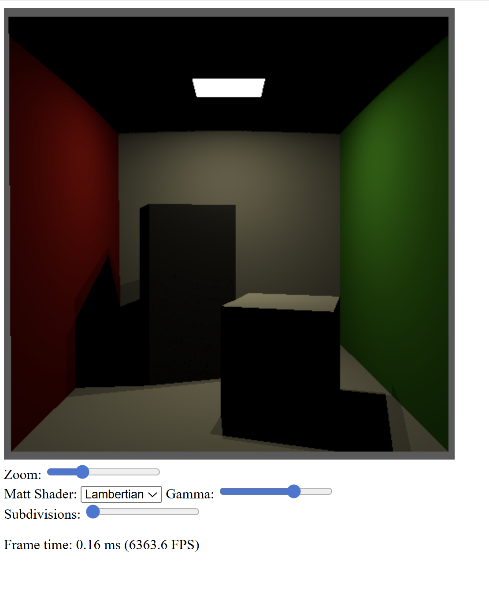
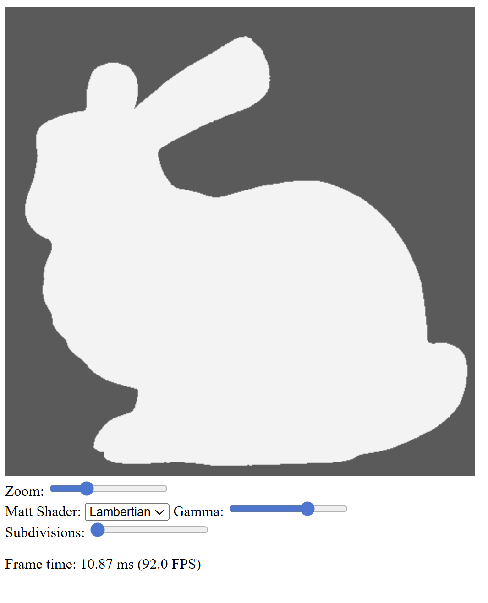
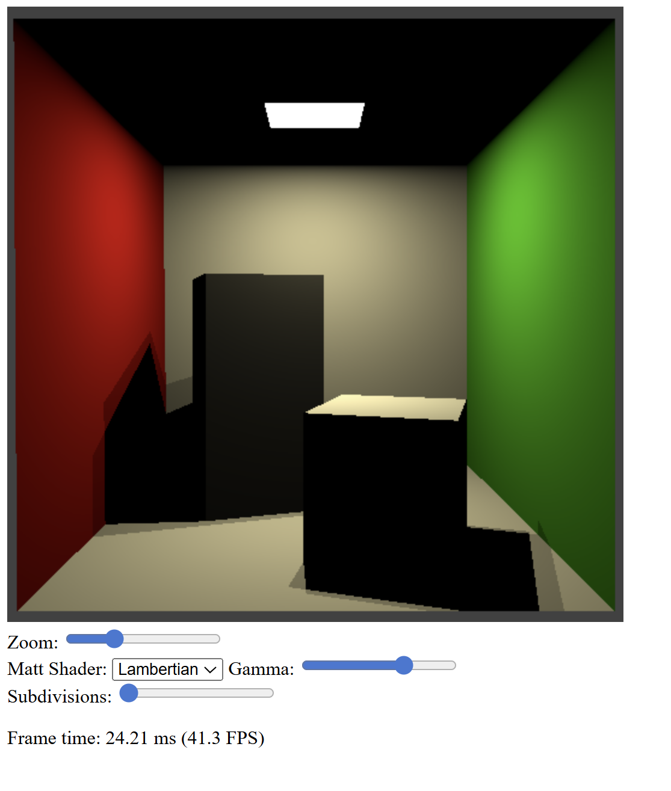
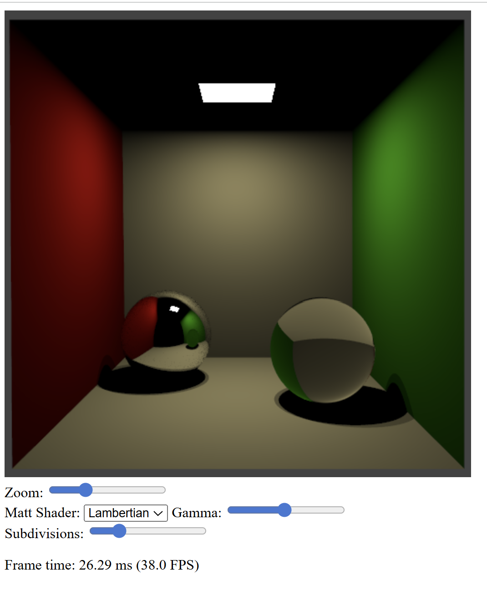

Exercise 1 — Triangle meshes, AABB and performance measurement
Starting from the brute-force ray tracer of Worksheet 5, I loaded triangle meshes from OBJ files and intersected rays with all triangles in the mesh.
I added an axis-aligned bounding box (AABB) around the mesh and avoided ray–triangle tests when a ray misses the bounding box. I also used the TimingHelper utility to measure frame time.
Source code: GitHub – Worksheet 6 / Exercise 1
Exercise 2 — BSP tree traversal for ray intersections
Instead of looping over all triangles, I replaced the brute-force approach with an axis-aligned BSP tree to find the closest ray–triangle intersection.
Rays traverse the BSP tree in the fragment shader, visiting near nodes first and only visiting far nodes if necessary. This allows efficient rendering of complex meshes such as the teapot and bunny.
Source code: GitHub – Worksheet 6 / Exercise 2
Exercise 3 — Interleaved buffers and area light shading
To stay below the WebGPU limit of storage buffers, I reduced the number of buffers by interleaving vertex positions and normals and storing face indices with material information.
With the reduced buffer layout, I reintroduced area light shading and rendered the Cornell box with blocks using the BSP tree.
Source code: GitHub – Worksheet 6 / Exercise 3
Exercise 4 — Cornell box with mirror and glass spheres
Finally, I rendered the Cornell box without blocks and inserted a mirror sphere and a glass sphere (IOR 1.5) at the specified positions.
The scene is rendered using the BSP tree and includes shadows, distant area light illumination, and optional anti-aliasing using jitter sampling. The acceleration structure makes these effects feasible at interactive rates.
Source code: GitHub – Worksheet 6 / Exercise 4